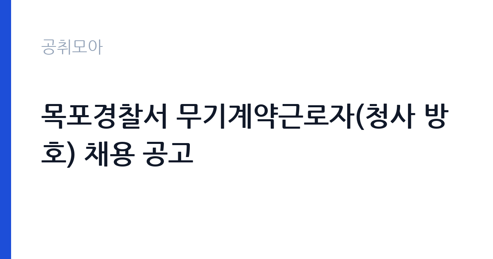

[국가기관] 목포경찰서 무기계약근로자(청사 방호) 채용 공고
경찰청 전남경찰청 목포경찰서 · 전남 · 마감 2026-11-12 (D-11) · 출처 나라일터

한눈에 보는 모집 조건
| 기관 | 경찰청 전남경찰청 목포경찰서 |
|---|---|
| 공고명 | 목포경찰서 무기계약근로자(청사 방호) 채용 공고 |
| 고용형태 | 공무직 |
| 근무지 | 전남 |
| 게시일 | 2026-11-02 |
| 마감일 | 2026-11-12 (D-11) |
지원자격, 이렇게 읽으세요
- 공무직 1명
- 접수 ~2026-11-12 마감
- 세부 조건은 원문 공고문 확인
공통요건은 경찰청 무기계약근로자 및 기간제근로자 관리규칙 제13조의 결격사유에 해당하지 않는 것입니다. 응시 연령은 원서접수 마감일 기준 만 65세 미만이고, 경찰관서에서 퇴직한 경찰관이나 일반직 공무원이 퇴직 직전 근무지에 지원하려면 퇴직한 지 1년이 지나야 합니다. 응시요건은 방호·경비·보안 등 관련 분야 근무경력 1년 이상입니다. 관련분야에는 경비업법과 청원경찰법에 따른 방호·경비·보안 업무, 경찰공무원·경호공무원·직업군인(부사관 이상)·교정직 공무원 경력이 포함됩니다. 우대사항은 일반경비지도사나 기계경비지도사 자격증, 무도단증 2단 이상입니다.
이 공고의 포인트
첫 번째 포인트는 정년입니다. 근무정년이 만 65세로, 통상 60세인 다른 공공기관 무기계약직보다 5년 깁니다. 공고문은 만 60세 해당연도 12월 31일자의 직무등급과 단계를 61세부터 정년일까지 고정 유지한다고까지 명시하고 있어, 60대 지원자에게 실질적인 기회가 됩니다. 두 번째는 급여 체계가 구체적으로 공개되어 있다는 점입니다. 기본급은 직무등급 1등급 1단계 급여이고, 정액수당으로 직급보조비 월 14만 5천원과 급식비 월 14만원이 제시되어 있습니다. 세 번째는 근무시간입니다. 주간근무로 교대가 없습니다.
전형은 어떻게 진행되나
1차 서류전형은 적격 여부를 심사하고 자기소개서와 제출서류를 바탕으로 서류전형 심사기준에 따라 평가합니다. 평가기준은 국가·지자체·기업체 등에서의 관련 업무 경력, 자기소개서 충실도, 우대요건 충족 여부입니다. 고득점자 순으로 선발예정인원의 2배수를 합격자로 정하고, 동점자가 있어 2배수를 넘으면 동점자 모두 합격입니다. 지원자가 2배수에 미달하면 결격자를 제외하고 전원 합격 처리합니다. 2차 면접시험은 정신자세, 품행, 책임·성실성, 지식, 직무이해, 의사표현력 등을 봅니다. 면접평정요소마다 상·중·하 점수를 부여해 상의 개수가 가장 많은 사람을 합격자로 정합니다.
이런 분께 추천해요
- 경비·보안 분야 경력 1년 이상인 분. 경비업법·청원경찰법에 따른 업무와 군·경찰·교정 경력이 인정됩니다.
- 일반경비지도사나 기계경비지도사 자격을 가진 분. 우대사항으로 명시되어 있습니다.
- 60대에도 계속 일하고 싶은 분. 근무정년이 만 65세이고 주간근무만 합니다.
지원 전 체크리스트
- 원서접수 마감일 기준 만 65세 미만인가. 정년 요건입니다.
- 방호·경비·보안 관련 경력 1년 이상을 증명할 수 있는가. 경력증명서와 건강보험 자격득실확인서가 필요합니다.
- 경찰관서 퇴직자라면 퇴직 후 1년이 지났는가. 퇴직 직전 근무지 지원 시 적용됩니다.
- 모든 서류에 자필서명하고 1개 PDF로 스캔했는가. 서명이 없으면 무효 처리됩니다.
모집 일정과 제출 타이밍
원서접수는 2026년 11월 2일 월요일부터 11월 12일 목요일 오후 6시까지입니다. 방문, 우편, 이메일 가운데 하나를 고를 수 있고 택배는 받지 않습니다. 접수는 마감일 오후 6시까지 도착분만 유효합니다. 서류전형 합격자 발표는 11월 20일 금요일, 면접은 11월 25일 수요일, 최종합격자 발표는 11월 30일 월요일입니다. 신규 채용일은 12월 8일 화요일이고, 최종합격자는 일반 채용 신체검사서 1부를 제출해야 합니다. 문의는 목포경찰서 경무계로 하면 됩니다.
직무 이해하기: 국가기관
청사 방호는 경찰서 건물과 부지를 지키는 업무입니다. 구체적으로는 출입자 확인과 방문객 안내, 주차 관리, 청사 내 순찰, 방범·방화 설비 상태 확인이 포함됩니다. 공고문은 대민업무로 민원인 안내와 주차 안내를 함께 제시하고 있어, 단순 경비가 아니라 경찰서를 찾는 사람을 응대하는 일이 업무의 절반을 차지합니다. 주간근무라 교대 부담은 없지만, 민원이 몰리는 시간대에는 응대와 순찰을 동시에 해야 합니다. 무기계약직으로 정년이 만 65세까지 보장됩니다.
자기소개서 작성 팁
서류전형에서 관련 업무 경력과 자기소개서 충실도, 우대요건 충족 여부를 봅니다. 자기소개서는 경력을 확인시켜 주는 자료로 쓰십시오. 첫 문단에서는 방호·경비 경력의 기간과 근무 기관, 담당했던 시설 규모를 구체적으로 적으십시오. 두 번째 문단에서는 대민 응대 경험을 넣으십시오. 공고문이 민원인과 주차 안내를 주요 업무로 명시하고 있으므로, 불만을 가진 방문객을 응대한 사례가 직접적인 근거가 됩니다. 세 번째로는 자격증이나 무도단증이 있으면 취득 시점과 단을 밝히십시오. 블라인드 원칙이 적용되므로 학교명과 출생지, 가족관계는 쓰지 마십시오.
면접 준비 포인트
면접은 정신자세, 품행, 책임·성실성, 지식, 직무이해, 의사표현력 6개 요소를 상·중·하로 평가합니다. 상의 개수가 가장 많은 사람이 합격자가 되므로, 한 항목에서 크게 실수하면 만회가 어렵습니다. 질문은 세 갈래로 예상됩니다. 첫째 경비 실무입니다. 출입 통제나 순찰 중 이상 상황을 발견했을 때의 조치 순서를 묻습니다. 둘째 대민 응대입니다. 민원인이 언성을 높일 때 어떻게 대응하는지 확인합니다. 셋째 근무 태도입니다. 주간근무와 정년까지의 장기 근무 의사를 확인합니다. 답변은 짧고 분명하게, 결론부터 말하십시오.
급여·근무조건 읽는 법
이 공고는 급여 체계가 비교적 구체적으로 공개되어 있습니다. 임금은 직무등급제에 따른 단계별 차등 임금제이고, 기본급은 직무등급 1등급 1단계 급여입니다. 정액수당으로 직급보조비 월 145,000원과 급식비 월 140,000원이 명시되어 있으며, 여기에 명절휴가비(기본급의 60퍼센트, 명절 당일 재직 중인 경우)와 복지포인트가 별도로 지급됩니다. 건강보험·고용보험·산재보험·국민연금에 가입하고 근로자퇴직급여보장법에 따른 퇴직급여도 지급됩니다. 다만 직무등급 1등급 1단계의 실제 금액은 공고문에 적혀 있지 않아 원문 첨부자료와 경찰청 기준 확인이 필요합니다.
자주 묻는 질문
- 정년이 어떻게 되나요?
근무정년은 만 65세입니다. 만 60세 해당연도 12월 31일자의 직무등급과 단계가 61세부터 정년일까지 고정 유지됩니다. - 경비 경력이 없어도 지원할 수 있나요?
방호·경비·보안 등 관련 분야 근무경력 1년 이상이 응시요건입니다. 경비업법·청원경찰법에 따른 업무와 경찰·경호·군·교정 경력이 인정됩니다. - 교대근무가 있나요?
공고문은 근무시간을 주간근무로 명시하고 있습니다. 교대 없이 낮 시간에만 근무하는 형태입니다.
함께 보면 좋은 공고
[국가기관] 해병대 덕산대 체력단련장(경기 화성) 공무직근로자 (경기담당) 채용 공고 — 마감 2026-11-08[국가기관] 테스트 — 마감 2026-11-11[국가기관] 국무조정실·국무총리비서실 전문임기제공무원 채용 변경공고 — 마감 2026-11-09출처: 나라일터 공개정보를 바탕으로 공취모아가 정리한 안내글입니다. 모집 조건·일정은 변경될 수 있으니 지원 전 반드시 원문 공고문을 확인하세요. 본 글은 정보 제공용이며 합격을 보장하지 않습니다.